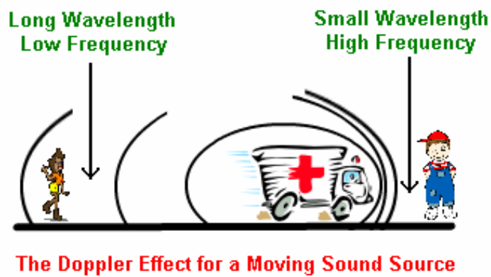
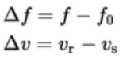

To calculate the Doppler frequency for elevation angles varying from 0 to 90 degrees.

In classical physics, it has been observed that when a signal wave is generated from a source which has a relative motion with the observer then there is a change in wavelength or frequency of the signal wave. The above can be well related to a scene where you are standing along the roadside and a speeding car passes in front of you. When the car is moving towards you, you can easily figure out an increase in frequency making it highly pitched and as it goes away from you, the observed frequency is reduced.

Classical Doppler Effect
As we have seen that the relative motion of the source and observer is the fundamental cause for the change in wavelength and hence the frequency of the original signal wave generated from the source. When the relative distance between the source and the observer decreases, each successive wave crest is transmitted from the position which is more closer to the observer. Hence, the time between the arrival of successive wave crests at the observer is reduced, causing an decrease in the wavelength ad increase in the frequency. This particularly can happen when the source is moving towards the observer or the observer is moving towards from the source.
Similarly, when the relative distance between the source ans the observer increases, each wave is emitted from a position farther from the observer than the previous wave. So the arrival time between successive waves is increased, increasing the wavelength and reducing the frequency. This can be the case when the source is moving away from the observer or the observer is moving away from the source.
Doppler Effect Formulation
The above observations can be deduced into simple formulations using the wavelength and frequency relation. The formula for Doppler effect is as follows-

where,
f = Original frequency emitted by the source
f’ = Frequency (after Doppler shift) observed by the observer
v = Velocity of wave in the medium
vr = Velocity of receiver relative to the medium; positive if the receiver is moving towards the source (and negative in the other direction)
vs = Velocity of source relative to the medium; positive if the source is moving away from the receiver (and negative in the other direction)
If the speeds vs and vs are small compared to the speed of the wave, the
relationship observed between observed frequency f’ and emitted frequency
f is approximately -
Observed Frequency:
Change in Frequency:
where,
∆v is the velocity of the receiver relative to the source; it is positive when the source and the receiver are moving towards each other.